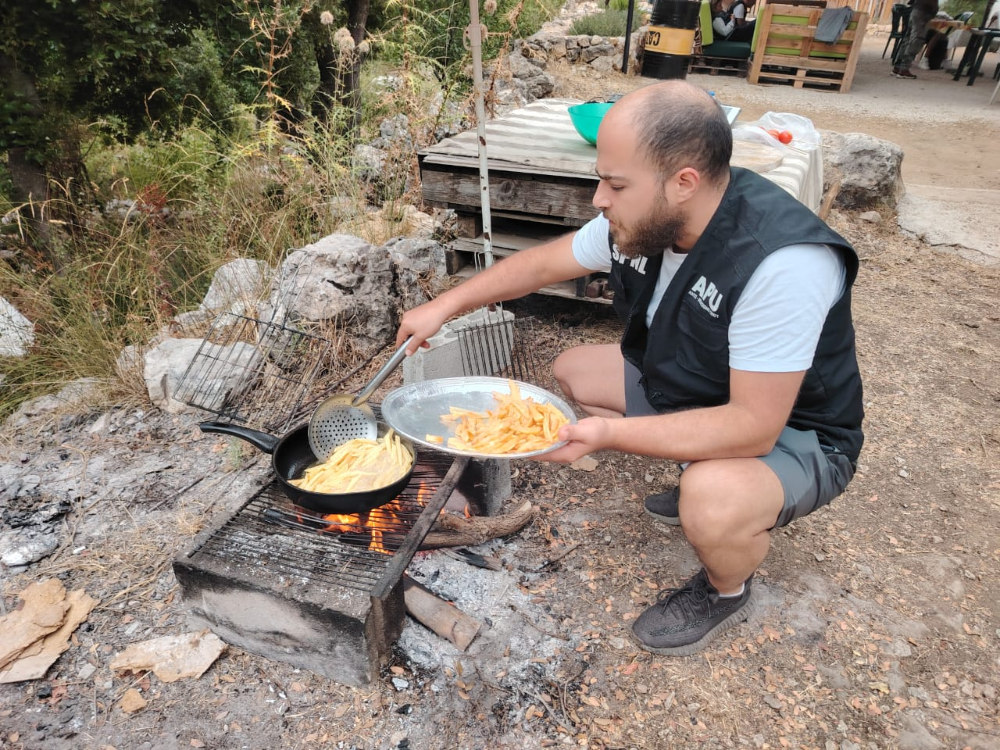
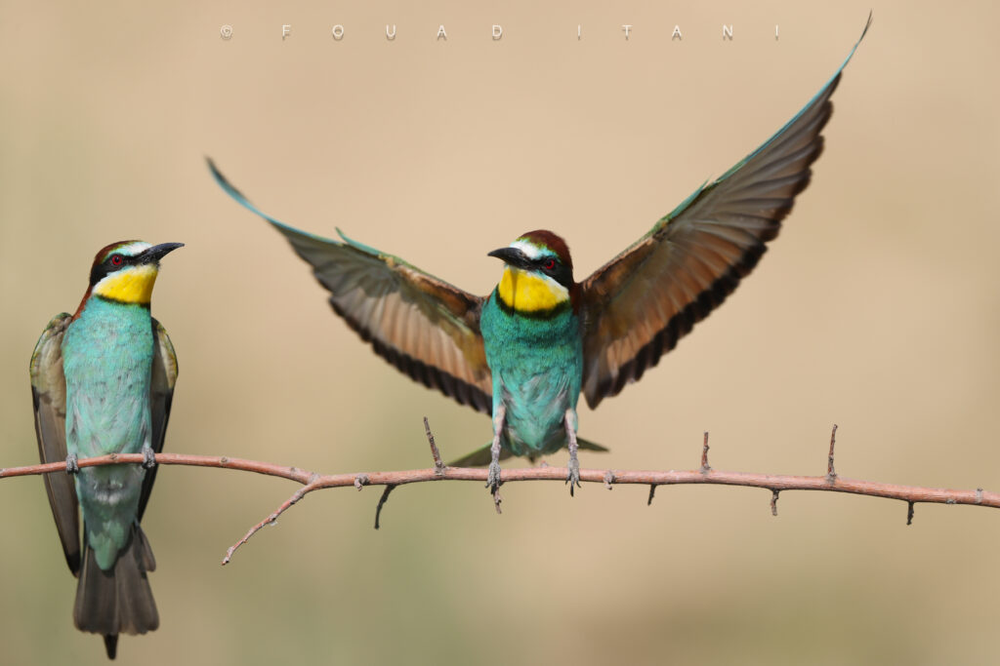
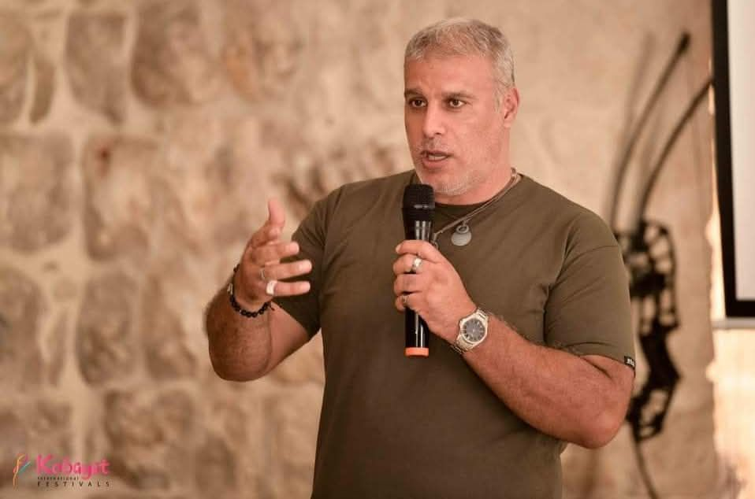
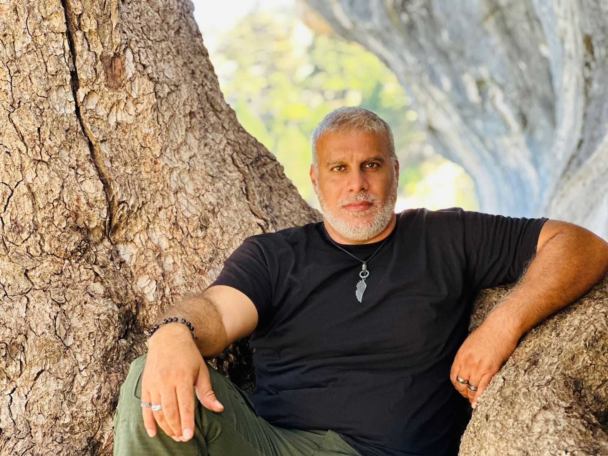

الدوحة – صيد
النسخة العاشرة من معرض كتارا الدولي للصيد والصقور جمعت التراث والابتكار والتجارة والسياحة، واستقطب مزاد الصقور اهتمامًا واسعًا.

السعودية تشدد على ضوابط الصيد: 5 آلاف ريال غرامة الصيد في الأماكن المحظورة
دعوة للالتزام بالتراخيص وضوابط موسم الصيد 2026–2027.
اقرأ الخبر كاملًا ←
حماية طيور هجرة الخريف في لبنان: شراكة ميدانية منذ ٢٠١٧ والخطيب يؤكد دور الصياد المستدام
حملة خريفية لحماية الطيور المهاجرة، وتصريح لأدونيس الخطيب عن شراكة ميدانية مستمرة منذ 2017.
اقرأ الخبر والتصريح كاملَين ←من كل وادي خبر




كلمة رئيس التحرير«صيد» تعود… وهذا ما نريد أن نقدّمه لكم
أدونيس الخطيب — مؤسس مجلة «صيد» ورئيس تحريرها
نريد لـ«صيد» أن تصبح مرجعًا عربيًا موثوقًا للصيد المستدام وعالم الطبيعة، ومنبرًا يجمع المعرفة العلمية بالتجربة الإنسانية والممارسة المسؤولة.
كلمة هيئة التحرير
تعود «صيد» برؤية أوسع وحلّة متجددة، وتضع المعرفة والمسؤولية في صلب اهتمامها بالصيد والطبيعة والفروسية.
اقرأ المقال كاملًا ←